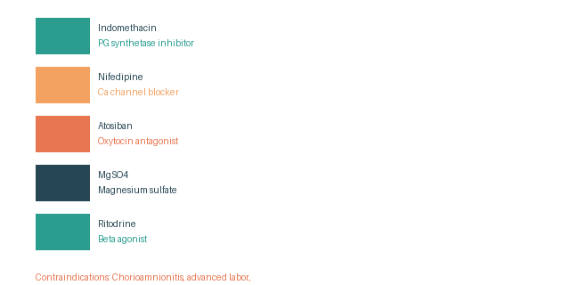

Tocolytic Therapy
Drugs Used for Tocolysis
Prostaglandin Synthetase Inhibitor
Indomethacin
50–100 mg twice daily oral/rectal, then 25–50 mg orally q6h for 48h. Not used after 30 wks.
Calcium Channel Blocker
Nifedipine
20 mg orally, then 20 mg after 30 min. Maintenance: 20 mg q4-8h (max 160 mg/day). Low side effects (hypotension, dizziness, flushing).
Oxytocin Antagonist
Atosiban
6.75 mg bolus, then 300 μg/min IV × 3h, then 100 μg/min. Very expensive.
Magnesium Sulfate
4–6 gm loading dose, then 1–2 gm for 24–48 hours.
Beta Agonist
Ritodrine, Terbutaline
Have dangerous complications (heart failure).
Nitric Oxide Donor
Glyceryl trinitrate
Contraindications of Tocolytics
Chorioamnionitis • Advanced labor • Pregnancy >34 weeks • Pre-eclampsia and eclampsia • Abruptio placenta • Fetal demise and distress • Congenital anomaly not compatible with life
